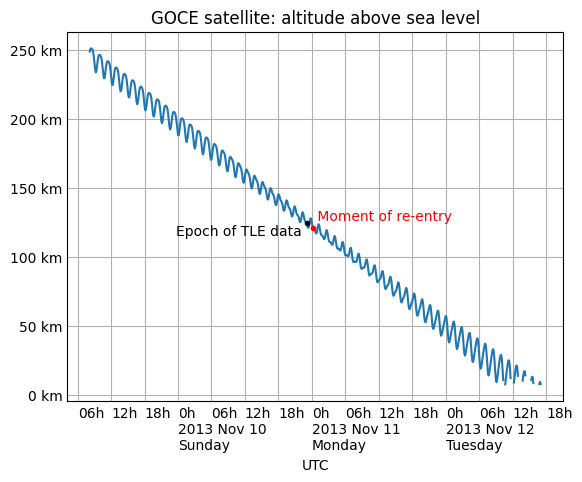

Skyfield: Home • Table of Contents • Changelog • API Reference
Skyfield is able to predict the position of an Earth satellite by downloading the satellite’s standard SGP4 orbital elements. Orbital elements are published by organizations like CelesTrak. Beware of these limitations:
Don’t expect perfect agreement between any two pieces of software that are trying to predict satellite positions. As Vallado, Crawford, and Hujsak point out in their crucial paper Revisiting Spacetrack Report #3, there are many different versions of the basic satellite prediction algorithm circulating in the wild. Skyfield uses the corrected and updated version of the algorithm that they published in that report.
Satellite orbital elements go rapidly out of date. As explained below in Checking an element set’s epoch, you will want to pay attention to the “epoch” date — the date on which a particular element set is most accurate. The element set might only be useful for a couple of weeks to either side of its epoch. For earlier dates, you will want to pull old elements from an archive; for later dates, you will want to download a fresh set of elements.
Satellite orbits don’t have perfect accuracy. According to Revisiting Spacetrack Report #3:
“The maximum accuracy for a TLE is limited by the number of decimal places in each field. In general, TLE data is accurate to about a kilometer or so at epoch and it quickly degrades.”
Given how close Earth satellites are to Earth,
there’s no point in calling the usual Skyfield
observe() method
that accounts for light-travel time.
As shown below, simple vector subtraction should work just as well.
Finally, note that even though several satellite elements have familiar names like inclination and eccentricity, they are not simple Kepler elements, and the SGP4 routine will not predict the same position as a simple Kepler orbit would.
Most folks download satellite element sets from CelesTrak:
https://celestrak.org/NORAD/elements/index.php
CelesTrak supports several data formats. The original Two-Line Element ‘TLE’ format describes a satellite orbit using two lines of dense ASCII text. Whitespace is significant because every character needs to be aligned in exactly the right column. Here, for example, are elements for the International Space Station (ISS):
ISS (ZARYA)
1 25544U 98067A 24127.82853009 .00015698 00000+0 27310-3 0 9995
2 25544 51.6393 160.4574 0003580 140.6673 205.7250 15.50957674452123
But CelesTrak also supports modern formats.
Here is the same element set in JSON format —
specifically, CelesTrak’s FORMAT=json-pretty format,
which adds indentation to make it easy to read;
use FORMAT=json if you don’t need the extra spaces and newlines:
[{
"OBJECT_NAME": "ISS (ZARYA)",
"OBJECT_ID": "1998-067A",
"EPOCH": "2024-05-06T19:53:04.999776",
"MEAN_MOTION": 15.50957674,
"ECCENTRICITY": 0.000358,
"INCLINATION": 51.6393,
"RA_OF_ASC_NODE": 160.4574,
"ARG_OF_PERICENTER": 140.6673,
"MEAN_ANOMALY": 205.725,
"EPHEMERIS_TYPE": 0,
"CLASSIFICATION_TYPE": "U",
"NORAD_CAT_ID": 25544,
"ELEMENT_SET_NO": 999,
"REV_AT_EPOCH": 45212,
"BSTAR": 0.0002731,
"MEAN_MOTION_DOT": 0.00015698,
"MEAN_MOTION_DDOT": 0
}]
And here are the same elements with FORMAT=CSV
(this is only two lines of text,
but your browser will probably wrap them
to fit your screen):
OBJECT_NAME,OBJECT_ID,EPOCH,MEAN_MOTION,ECCENTRICITY,INCLINATION,RA_OF_ASC_NODE,ARG_OF_PERICENTER,MEAN_ANOMALY,EPHEMERIS_TYPE,CLASSIFICATION_TYPE,NORAD_CAT_ID,ELEMENT_SET_NO,REV_AT_EPOCH,BSTAR,MEAN_MOTION_DOT,MEAN_MOTION_DDOT
ISS (ZARYA),1998-067A,2024-05-06T19:53:04.999776,15.50957674,.000358,51.6393,160.4574,140.6673,205.7250,0,U,25544,999,45212,.2731E-3,.15698E-3,0
Note these differences:
25544)
to 5 digits.
The JSON and CSV formats, by contrast,
don’t place a limit on the size of the catalog number.There are more obscure formats in use at CelesTrak, including a ‘key-value notation (KVN)’ and an unfortunate XML format, but here we will focus on the mainstream formats listed above.
Whether you choose one of CelesTrak’s pre-packaged satellite lists like ‘Space Stations’ or ‘CubeSats’, or perform a query for a particular satellite, there are three issues to beware of:
gp.php?GROUP=stations,
and then the ‘CubeSats’ with gp.php?GROUP=cubesat,
then Skyfield will save them to the same filename gp.php
and the CubeSats will wind up overwriting the Space Stations.
To avoid this, use the filename= optional argument
to create a separate local file for each remote URL.Here’s a useful pattern for downloading element sets with Skyfield:
from skyfield.api import load
max_days = 7.0 # download again once 7 days old
name = 'stations.csv' # custom filename, not 'gp.php'
base = 'https://celestrak.org/NORAD/elements/gp.php'
url = base + '?GROUP=stations&FORMAT=csv'
if not load.exists(name) or load.days_old(name) >= max_days:
load.download(url, filename=name)
The next section will illustrate how to load satellites once you have downloaded the file.
If your project is serious enough that you will need to be able to double-check and replicate old results later, then don’t follow this example — every time the file gets too old, this code will overwrite the file with new data. Instead, you will probably want to put the date in the filename, and archive each file along with your project’s code.
Once you have downloaded a file of elements, use one of these patterns to load them into Skyfield. For the traditional TLE format:
from skyfield.api import load
from skyfield.iokit import parse_tle_file
ts = load.timescale()
with load.open('stations.tle') as f:
satellites = list(parse_tle_file(f, ts))
print('Loaded', len(satellites), 'satellites')
Loaded 27 satellites
For the verbose but easy-to-read JSON format:
import json
from skyfield.api import EarthSatellite, load
with load.open('stations.json') as f:
data = json.load(f)
ts = load.timescale()
sats = [EarthSatellite.from_omm(ts, fields) for fields in data]
print('Loaded', len(sats), 'satellites')
Loaded 27 satellites
For the more compact CSV format:
import csv
from skyfield.api import EarthSatellite, load
with load.open('stations.csv', mode='r') as f:
data = list(csv.DictReader(f))
ts = load.timescale()
sats = [EarthSatellite.from_omm(ts, fields) for fields in data]
print('Loaded', len(sats), 'satellites')
Loaded 27 satellites
In each case,
you are asked to provide a ts timescale.
Why?
Because Skyfield needs the timescale’s knowledge of leap seconds
to turn each satellite’s epoch date
into an .epoch Time object.
If your program has already loaded TLE, JSON, or CSV data into memory and doesn’t need to read it over again from a file, you can make the string behave like a file by wrapping it in a Python I/O object:
# For TLE and JSON:
from io import BytesIO
f = BytesIO(byte_string)
# For CSV:
from io import StringIO
f = StringIO(text_string)
You can then use the resulting file object f
with the example code in the previous section.
If you want to operate on every satellite
in the list that you have loaded from a file,
you can use Python’s for loop.
But if you instead want to select individual satellites by name or number,
try building a lookup dictionary
using Python’s dictionary comprehension syntax:
by_name = {sat.name: sat for sat in satellites}
satellite = by_name['ISS (ZARYA)']
print(satellite)
ISS (ZARYA) catalog #25544 epoch 2024-05-09 08:48:20 UTC
by_number = {sat.model.satnum: sat for sat in satellites}
satellite = by_number[25544]
print(satellite)
ISS (ZARYA) catalog #25544 epoch 2024-05-09 08:48:20 UTC
If your program already has the two lines of TLE data for a satellite
and doesn’t need Skyfield to download and parse a CelesTrak file,
you can instantiate an EarthSatellite directly.
from skyfield.api import EarthSatellite
ts = load.timescale()
line1 = '1 25544U 98067A 14020.93268519 .00009878 00000-0 18200-3 0 5082'
line2 = '2 25544 51.6498 109.4756 0003572 55.9686 274.8005 15.49815350868473'
satellite = EarthSatellite(line1, line2, 'ISS (ZARYA)', ts)
print(satellite)
ISS (ZARYA) catalog #25544 epoch 2014-01-20 22:23:04 UTC
The .epoch time of a satellite element set
is the date and time on which the element set is most accurate.
Before or after that date,
the element set will be less accurate.
The epoch is a Skyfield Time object:
print(satellite.epoch.utc_jpl())
A.D. 2014-Jan-20 22:23:04.0004 UTC
If the epoch is too far in the past,
you can provide tle_file()
with the reload option to force it to download new elements
even if the file is already on disk.
(Note, though, that there is no guarantee that the new elements
will be up-to-date if the source file is not frequently updated
for the satellite you are interested in —
so this pattern might make you download a new file on each run
until the satellite’s elements are finally updated.)
t = ts.utc(2014, 1, 23, 11, 18, 7)
days = t - satellite.epoch
print('{:.3f} days away from epoch'.format(days))
if abs(days) > 14:
satellites = load.tle_file(stations_url, reload=True)
2.538 days away from epoch
You can read T.S. Kelso on Twitter to follow along with the drama as various satellite element sets go out-of-date each month and await updates from their respective organizations.
To repeat the warning in the previous section: any particular satellite TLE set is only valid for a couple of weeks to either side of that TLE’s epoch.
That limitation unfortunately applies to the past as well as to the future. Just as today’s TLE for a satellite can only help you predict its position for a few weeks into the future, it will also be accurate for only a few weeks into the past. Whether the satellite has been performing active maneuvers, or merely coasting amidst the unpredictable magnetic fields and atmospheric drag of the near-Earth environment, a current TLE cannot predict the satellite’s position on a date in the distant past.
If you lack access to an archive of old TLE files, try searching the Internet Archive’s “Wayback Machine”:
Supply the URL of the current satellite catalog you downloaded and click “Browse History” and the Archive will display a calendar indicating whether any earlier versions of that same satellite catalog are in their archive. If so, then you should be able to download them to your machine and use them when you need historic satellite positions close to the old TLE’s epoch date.
Skyfield can search between a start time and an end time for each occasion on which a satellite’s altitude exceeds a specified number of degrees above the horizon. For example, here is how to determine how many times our example satellite rises above 30° of altitude over the span of a single day:
from skyfield.api import wgs84
bluffton = wgs84.latlon(+40.8939, -83.8917)
t0 = ts.utc(2014, 1, 23)
t1 = ts.utc(2014, 1, 24)
t, events = satellite.find_events(bluffton, t0, t1, altitude_degrees=30.0)
event_names = 'rise above 30°', 'culminate', 'set below 30°'
for ti, event in zip(t, events):
name = event_names[event]
print(ti.utc_strftime('%Y %b %d %H:%M:%S'), name)
2014 Jan 23 06:25:37 rise above 30°
2014 Jan 23 06:26:58 culminate
2014 Jan 23 06:28:19 set below 30°
2014 Jan 23 12:54:56 rise above 30°
2014 Jan 23 12:56:27 culminate
2014 Jan 23 12:57:58 set below 30°
The satellite’s altitude exceeded 30° twice.
For each such occasion,
the method find_events()
has determined not only the moment of greatest altitude —
accurate to within a second or so —
but also the time at which the satellite first crested 30°
and the moment at which it dipped below it.
Beware that events might not always be in the order rise-culminate-set. Some satellites culminate several times between rising and setting.
By combining these results
with the result of the is_sunlit() method
(as described below in Find when a satellite is in sunlight),
you can determine whether the satellite is in sunlight
during these passes,
or is eclipsed within the Earth’s shadow.
eph = load('de421.bsp')
sunlit = satellite.at(t).is_sunlit(eph)
for ti, event, sunlit_flag in zip(t, events, sunlit):
name = event_names[event]
state = ('in shadow', 'in sunlight')[sunlit_flag]
print('{:22} {:15} {}'.format(
ti.utc_strftime('%Y %b %d %H:%M:%S'), name, state,
))
2014 Jan 23 06:25:37 rise above 30° in shadow
2014 Jan 23 06:26:58 culminate in shadow
2014 Jan 23 06:28:19 set below 30° in shadow
2014 Jan 23 12:54:56 rise above 30° in sunlight
2014 Jan 23 12:56:27 culminate in sunlight
2014 Jan 23 12:57:58 set below 30° in sunlight
Finally, you will probably want to check the altitude of the Sun, so that you can ignore passes that happen during the daytime — unless you have some means of observing the satellite (by radio, for example) before it gets dark outside.
Once Skyfield has identified the times at which a particular satellite is overhead, you will probably want to learn more about its position at those times.
The simplest form in which you can generate a satellite position
is to call its at() method,
which will return an (x,y,z) position relative to the Earth’s center
in the Geocentric Celestial Reference System.
(GCRS coordinates are based on even more precise axes
than those of the old J2000 system.)
# You can instead use ts.now() for the current time
t = ts.utc(2014, 1, 23, 11, 18, 7)
geocentric = satellite.at(t)
print(geocentric.xyz.km)
[-3918.87650458 -1887.64838745 5209.08801512]
Once you have computed a geocentric satellite position,
you can use either of several wgs84 object methods
to learn the satellite’s latitude, longitude, and height:
For example:
lat, lon = wgs84.latlon_of(geocentric)
print('Latitude:', lat)
print('Longitude:', lon)
Latitude: 50deg 14' 37.4"
Longitude: -86deg 23' 23.3"
Another wgs84 method
computes the subpoint directly below the satellite —
the point on the Earth
with the same latitude and longitude as the satellite,
but with a height above the WGS84 ellipsoid of zero:
If you want the actual position of the ground beneath the satellite, you of course can’t assume that the position will be exactly at sea level. You’ll need to find a geographic library that lets you load a digital elevation model (DEM), then build a subpoint manually using the elevation returned for the satellite’s latitude and longitude.
elevation_m = 123.0
subpoint = wgs84.latlon(lat.degrees, lon.degrees, elevation_m)
You might be most interested
in whether the satellite is above or below the horizon
from your own position as an observer,
and in which direction to look for it.
If you build an object to represent your latitude and longitude
(as we did when we created the bluffton object above),
you can use vector subtraction
to ask “where will the satellite be relative to my location?”
difference = satellite - bluffton
Every time you call this vector sum’s at() method,
it will compute the satellite’s position,
then your own position,
then subtract them.
The result will be the position of the satellite relative
to you as an observer.
If you are interested you can access this relative position
as plain (x,y,z) coordinates:
topocentric = difference.at(t)
print(topocentric.xyz.km)
[ 331.61901192 392.18492744 1049.7597825 ]
But the most popular approach is to ask the topocentric position for its altitude and azimuth. The altitude angle runs from 0° at the horizon to 90° directly overhead at the zenith. A negative altitude means the satellite is that many degrees below the horizon.
alt, az, distance = topocentric.altaz()
if alt.degrees > 0:
print('The ISS is above the horizon')
print('Altitude:', alt)
print('Azimuth:', az)
print('Distance: {:.1f} km'.format(distance.km))
The ISS is above the horizon
Altitude: 16deg 16' 32.6"
Azimuth: 350deg 15' 20.4"
Distance: 1168.7 km
The azimuth is measured clockwise around the horizon, just like the degrees shown on a compass, from geographic north (0°) through east (90°), south (180°), and west (270°) before returning to the north and rolling over from 359° back to 0°.
If you are interested in where among the stars the satellite will be positioned, then — as with any other Skyfield position object — you can ask for its right ascension and declination, either relative to the fixed axes of the ICRF or else in the dynamical coordinate system of the date you specify.
ra, dec, distance = topocentric.radec() # ICRF ("J2000")
print(ra)
print(dec)
03h 19m 07.97s
+63deg 55' 47.2"
ra, dec, distance = topocentric.radec(epoch='date')
print(ra)
print(dec)
03h 20m 22.42s
+63deg 58' 45.2"
See Positions to learn more about these possibilities.
If you’re interested in the Doppler shift
of the radio signal from a satellite,
you’ll want to know the rate
at which the satellite’s range to your antenna is changing.
To determine the rate,
use the position method
frame_latlon_and_rates()
whose third return value will be the range
and whose sixth return value will be the range’s rate of change.
Our example satellite culminates at around 20° above the horizon just after 11:20pm UTC. As expected, its range reaches a minimum during that minute and its range rate swaps from negative (drawing closer) to positive (moving away).
t = ts.utc(2014, 1, 23, 11, range(17, 23))
pos = (satellite - bluffton).at(t)
_, _, the_range, _, _, range_rate = pos.frame_latlon_and_rates(bluffton)
from numpy import array2string
print(array2string(the_range.km, precision=1), 'km')
print(array2string(range_rate.km_per_s, precision=2), 'km/s')
[1434.2 1190.5 1064.3 1097.3 1277.4 1553.6] km
[-4.74 -3.24 -0.84 1.9 3.95 5.14] km/s
I’ve chosen here to ask for coordinates in the observer’s alt-az frame of reference, but in fact the choice of coordinate system doesn’t matter if we’re going to ignore everything but the range and range rate: those two quantities should be independent of the orientation of the spherical coordinate system we choose.
A satellite is generally only visible to a ground observer when there is still sunlight up at its altitude. The satellite will visually disappear when it enters the Earth’s shadow and reappear when it emerges back into the sunlight. If you are planning to observe a satellite visually, rather than with radar or radio, you will want to know which satellite passes are in sunlight. Knowing a satellite’s sunlit periods is also helpful when modeling satellite power and thermal cycles as it goes in and out of eclipse.
Skyfield provides a simple geometric estimate for this
through the is_sunlit() method.
Given an ephemeris with which it can compute the Sun’s position,
it will return True when the satellite is in sunlight
and False otherwise.
eph = load('de421.bsp')
two_hours = ts.utc(2014, 1, 20, 0, range(0, 120, 20))
sunlit = satellite.at(two_hours).is_sunlit(eph)
print(sunlit)
[ True True False False True True]
As usual, you can use Python’s zip() builtin
if you want to loop across the times and corresponding values.
for ti, sunlit_i in zip(two_hours, sunlit):
print('{} {} is in {}'.format(
ti.utc_strftime('%Y-%m-%d %H:%M'),
satellite.name,
'sunlight' if sunlit_i else 'shadow',
))
2014-01-20 00:00 ISS (ZARYA) is in sunlight
2014-01-20 00:20 ISS (ZARYA) is in sunlight
2014-01-20 00:40 ISS (ZARYA) is in shadow
2014-01-20 01:00 ISS (ZARYA) is in shadow
2014-01-20 01:20 ISS (ZARYA) is in sunlight
2014-01-20 01:40 ISS (ZARYA) is in sunlight
The Earth looms large in the sky of an Earth-orbiting satellite.
To plan an observation you may want to know
when a given celestial object is blocked by the Earth
and not visible from your satellite.
Skyfield provides a simple geometric estimate for this
through the is_behind_earth() method.
eph = load('de421.bsp')
earth, venus = eph['earth'], eph['venus']
two_hours = ts.utc(2014, 1, 20, 0, range(0, 120, 20))
p = (earth + satellite).at(two_hours).observe(venus).apparent()
sunlit = p.is_behind_earth()
print(sunlit)
[False False True True False False]
See the previous section for how to associate
each of these True and False values
with their corresponding time.
When computing positions for the Sun, Moon, planets, and stars,
Skyfield encourages a far more fussy approach
than directly subtracting two vectors.
In those cases, the user is encouraged
to compute their current location with at()
and then call the observe() method on the result
so that Skyfield can correctly adjust the object’s position
for the time it takes light to travel.
How far off will your observations be if you simply subtract your position vector from the satellite’s vector, as encouraged above? Let’s try the alternative and measure the difference.
To use the observe() method,
you need a position measured all the way
from the Solar System Barycenter (SSB).
To anchor both our observer location
and that of the satellite to the SSB,
we can use vector addition with an ephemeris
that predicts the Solar System position of the Earth:
# OVERLY EXPENSIVE APPROACH - Compute both the satellite
# and observer positions relative to the Solar System
# barycenter ("ssb"), then call observe() to compensate
# for light-travel time.
t = ts.utc(2014, 1, 23, 11, 18, 7)
de421 = load('de421.bsp')
earth = de421['earth']
ssb_bluffton = earth + bluffton
ssb_satellite = earth + satellite
topocentric2 = ssb_bluffton.at(t).observe(ssb_satellite).apparent()
What difference has all of that work made? We can subtract the resulting positions to find out the distance between them:
# After all that work, how big is the difference, really?
difference_km = (topocentric2 - topocentric).distance().km
print('Difference between the two positions:')
print('{0:.3f} km'.format(difference_km))
difference_angle = topocentric2.separation_from(topocentric)
print('Angle between the two positions in the sky:')
print('{}'.format(difference_angle))
Difference between the two positions:
0.087 km
Angle between the two positions in the sky:
00deg 00' 04.6"
And there you have it!
While satellite positions are only accurate to about a kilometer anyway, accounting for light travel time only affected the position in this case by less than an additional tenth of a kilometer. This difference is not meaningful when compared to the uncertainty that is inherent in satellite positions to begin with, so you should neglect it and simply subtract GCRS-centered vectors instead as detailed above.
After building a satellite object,
you can examine the epoch date and time
when the TLE element set’s predictions are most accurate.
The epoch attribute is a Time,
so it supports all of the standard Skyfield date methods:
from skyfield.api import EarthSatellite
text = """
GOCE
1 34602U 09013A 13314.96046236 .14220718 20669-5 50412-4 0 930
2 34602 096.5717 344.5256 0009826 296.2811 064.0942 16.58673376272979
"""
lines = text.strip().splitlines()
sat = EarthSatellite(lines[1], lines[2], lines[0])
print(sat.epoch.utc_jpl())
A.D. 2013-Nov-10 23:03:03.9479 UTC
Skyfield is willing to generate positions
for dates quite far from a satellite’s epoch,
even if they are not likely to be meaningful.
But it cannot generate a position
beyond the point where the elements stop making physical sense.
At that point, the satellite will return a position and velocity
(nan, nan, nan) where all of the quantities
are the special floating-point value nan which means not-a-number.
When a propagation error occurs and you get nan values,
you can examine the message attribute of the returned position
to learn the error that the SGP4 propagator encountered.
We can take as an example the satellite elements above. They are the last elements ever issued for GOCE, just before the satellite re-entered the atmosphere after an extended and successful mission. Because of the steep decay of its orbit, the elements are valid over an unusually short period — from just before noon on Saturday to just past noon on Tuesday:
By asking for GOCE’s position just before or after this window, we can learn about the propagation errors that are limiting this TLE set’s predictions:
geocentric = sat.at(ts.utc(2013, 11, 9))
print('Before:')
print(geocentric.xyz.km)
print(geocentric.message)
geocentric = sat.at(ts.utc(2013, 11, 13))
print('\nAfter:')
print(geocentric.xyz.km)
print(geocentric.message)
Before:
[nan nan nan]
mean eccentricity is outside the range 0.0 to 1.0
After:
[-5021.82658191 742.71506112 3831.57403957]
mrt is less than 1.0 which indicates the satellite has decayed
If you use a Time array to ask about an entire range of dates,
then message will be a sequence filled in with None
whenever the SGP4 propagator was successful
and otherwise recording the propagator error:
from pprint import pprint
geocentric = sat.at(ts.utc(2013, 11, [9, 10, 11, 12, 13]))
pprint(geocentric.message)
['mean eccentricity is outside the range 0.0 to 1.0',
None,
None,
None,
'mrt is less than 1.0 which indicates the satellite has decayed']
If your satellite elements
are designed for another gravity model besides the default WGS72 model,
then use the underlying sgp4 module to build the satellite.
It will let you customize the choice of gravity model:
from sgp4.api import Satrec, WGS84
satrec = Satrec.twoline2rv(line1, line2, WGS84)
sat = EarthSatellite.from_satrec(satrec, ts)
If you are starting with raw satellite orbital parameters instead of TLE text, you will want to interact directly with the sgp4 library that Skyfield uses for its low-level satellite calculations.
The underlying library provides access to a low-level constructor that builds a satellite model directly from numeric orbital parameters:
from sgp4.api import Satrec, WGS72
satrec = Satrec()
satrec.sgp4init(
WGS72, # gravity model
'i', # 'a' = old AFSPC mode, 'i' = improved mode
5, # satnum: Satellite number
18441.785, # epoch: days since 1949 December 31 00:00 UT
2.8098e-05, # bstar: drag coefficient (/earth radii)
6.969196665e-13, # ndot: ballistic coefficient (radians/minute^2)
0.0, # nddot: second derivative of mean motion (radians/minute^3)
0.1859667, # ecco: eccentricity
5.7904160274885, # argpo: argument of perigee (radians)
0.5980929187319, # inclo: inclination (radians)
0.3373093125574, # mo: mean anomaly (radians)
0.0472294454407, # no_kozai: mean motion (radians/minute)
6.0863854713832, # nodeo: right ascension of ascending node (radians)
)
If you need any more details,
this sgp4init method is documented in the
Providing your own elements
section of the sgp4 library’s documentation on the Python Packaging Index.
To wrap this low-level satellite model in a Skyfield object, call this special constructor:
sat = EarthSatellite.from_satrec(satrec, ts)
print('Satellite number:', sat.model.satnum)
print('Epoch:', sat.epoch.utc_jpl())
Satellite number: 5
Epoch: A.D. 2000-Jun-27 18:50:24.0000 UTC
The result should be a satellite object that behaves exactly as though it had been loaded from TLE lines.